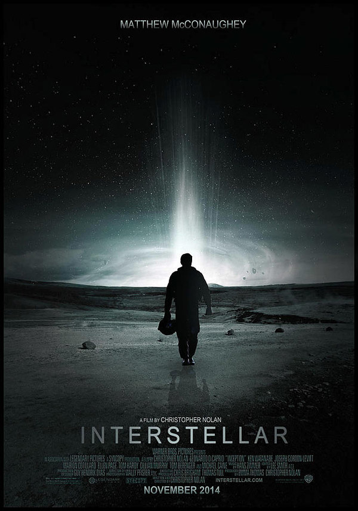
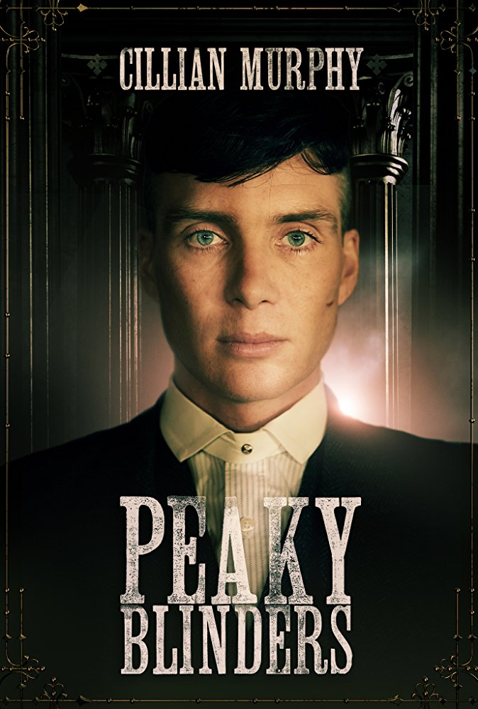
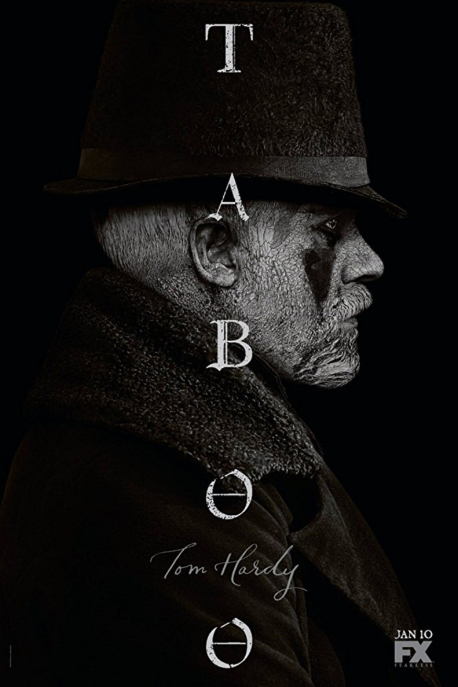

Born and raised à côté de Nantes en Loire-Atlantique. J'ai 27 ans, 3,5 années de conseil en stratégie d'entreprise derrière moi - essentiellement en retail / gde distribution. J'aime le foot, la gastronomie et la plongée sous-marine. J'ai également vécu plusieurs années à l'étranger : en Autriche (Graz), en Allemagne (Munich) et en Espagne (Madrid).
|  |
InterstellarA team of explorers travel through a wormhole in space in an attempt to ensure humanity's survival. |
|  |
Peaky BlindersA gangster family epic set in 1919 Birmingham, England; centered on a gang who sew razor blades in the peaks of their caps, and their fierce boss Tommy Shelby. |
|  |
TabooAdventurer James Keziah Delaney returns to London during the War of 1812 to rebuild his late father's shipping empire. However, both the government and his biggest competitor want his inheritance at any cost - even murder. |